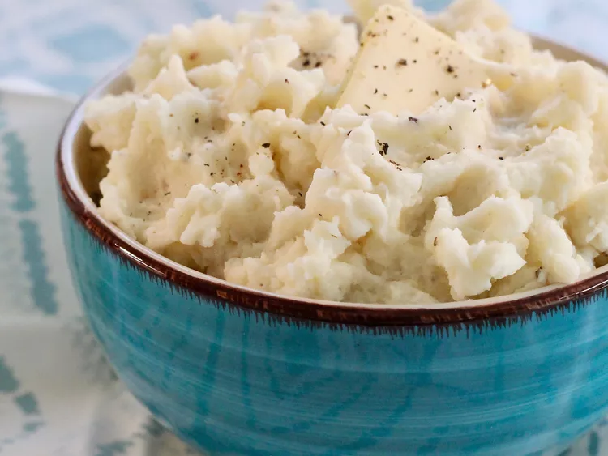

Mashed Potato

The best potatoes for mashing depends on your personal preference, as some varieties will give you fluffy results while others will give you creamy results.
This recipe calls for baking potatoes (a.k.a. russets), which are ideal for light and fluffy mashed potatoes. A good all-purpose potato, such as Yukon Gold, is also always a crowd-pleaser.
Ingredient
- 2 pounds baking potatoes, peeled and quartered
- 3 cloves garlic, peeled, or to taste (Optional)
- 1 cup milk
- 2 tablespoons butter
- salt and ground pepper to taste
Steps
- Gather all ingredients.
-
Bring a large pot of salted water to a boil. Add potatoes and garlic, lower heat to medium, and simmer until potatoes are tender, 15 to 20 minutes.
-
When the potatoes are almost finished, heat milk and butter in a small saucepan over low heat until butter is melted.
-
Drain potatoes and return to the pot. Slowly add warm milk mixture, blending it in with a potato masher or electric mixer until potatoes are smooth and creamy.
- Season with salt and pepper. Serve and enjoy!